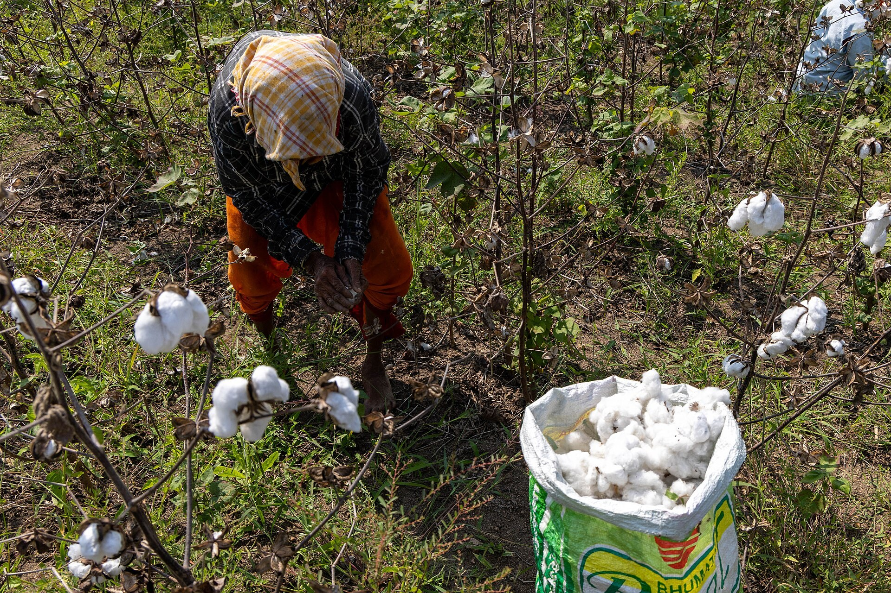

Forced labour persists in Turkmenistan's cotton harvest
Teachers, doctors and state employees are forced to pick cotton or to pay from their salaries for a replacement; reform pledges are not being met.

Turkmenistan's 2026 cotton harvest has again turned into forced labour. Teachers, doctors, state-enterprise, utility and road-agency staff are made either to pick cotton themselves or to pay from their salaries to hire a replacement. The harvest began on 9 September across the country's four cotton provinces — Ahal, Dashoguz, Lebap and Mary.
How it works
According to the independent outlets Turkmen.news and Chronicles of Turkmenistan and the Cotton Campaign coalition, authorities reversed limited exemptions granted to some doctors and teachers in 2024. The sums demanded vary by institution — for example, road-agency staff pay about 200 manat a month (roughly $10). The reports rely on anonymous in-country monitors; the government has not commented.
The numbers
The International Labour Organization (ILO) observed children in 38% of its field visits in 2025 — up from 23% in 2024; in Dashoguz the figure reached 59%. The Cotton Campaign says the situation worsened in 2025–2026.

Reform pledges
In May 2026 the ILO and the European Union launched a joint project to prevent forced and child labour; an international conference was held in Ashgabat on 4 November. Yet reports show the reform commitments are not being sustained.
International context and the neighbour's contrast
The US has restricted imports of Turkmen cotton since 18 May 2018. By contrast, neighbouring Uzbekistan left a years-long international boycott in March 2022 after the ILO found no systemic forced or child labour in its 2021 harvest. The Cotton Campaign urges buyers and governments to treat Turkmen cotton as high-risk.